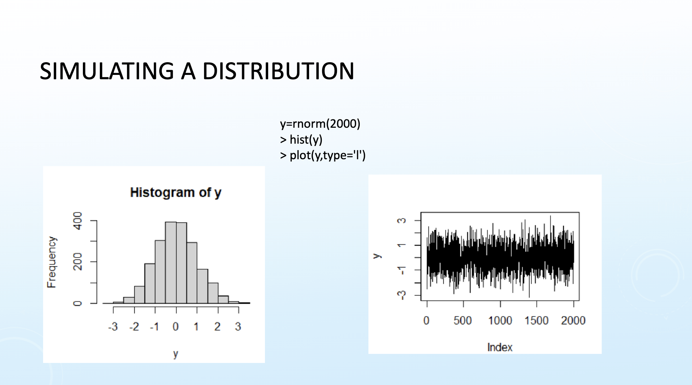
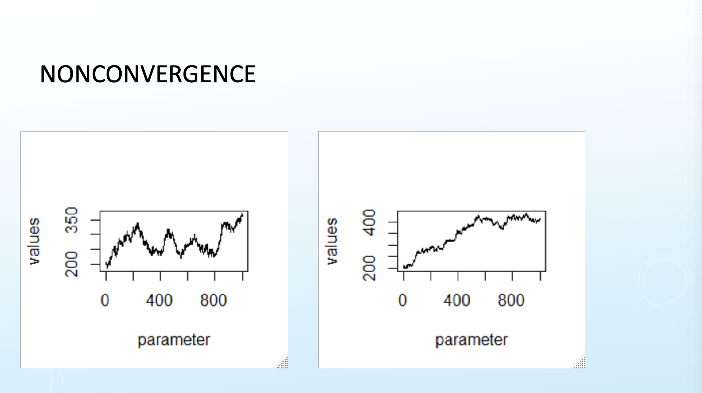

A trace plot shows the value at each index of a simulated distribution.

Figure 1: Trace Plot
In Figure 1, the trace plot is what we consider to be a stationary distribution. To generate trace plots, we use Markov Chain Monte Carlo (MCMC) methods. Initially, we start with a random value and are trying to simulate the posterior distribution. For each value in the MCMC only depends on the previous value and we are looking for the chain to converge to a stationary distribution.
In a trace plot, the chain starts with a burn-in period to try to find the posterior distribution once it converges. If the chain does not converge, we will see a trace plot that looks like Figure 2.

Figure 2: Nonconvergence
1.1 Fixes
Improper posterior or bad prior: New prior distribution
Hasn’t converged: Let the chain run longer
Chain continues to increase: Potentially a bad starting point so provide a new starting point or change prior
Too much autocorrelation in chain: Thin the chain
Code
import pymc as pmimport numpy as npwith pm.Model() as binomial_model: p = pm.Beta("p", alpha=1, beta=1) y_obs = pm.Binomial("y_obs", n=100, p=p, observed=40) trace = pm.sample( draws=6000, tune=3000, chains=4, init="adapt_diag", random_seed=98763, return_inferencedata=True, )pm.plot_trace(trace, var_names=["p"], compact=False, legend=True);
Auto-assigning NUTS sampler...
Initializing NUTS using adapt_diag...
Multiprocess sampling (4 chains in 4 jobs)
NUTS: [p]
Sampling 4 chains for 3_000 tune and 6_000 draw iterations (12_000 + 24_000 draws total) took 1 seconds.
/opt/homebrew/Caskroom/miniforge/base/envs/msa/lib/python3.11/site-packages/arviz/plots/backends/matplotlib/traceplot.py:433: FutureWarning: The return type of `Dataset.dims` will be changed to return a set of dimension names in future, in order to be more consistent with `DataArray.dims`. To access a mapping from dimension names to lengths, please use `Dataset.sizes`.
for chain_id in range(data.dims["chain"])
We are interested in estimating VaR for Apple stock (AAPL) in rate of change (ROC) for one day. Let’s assume rate of change \((R_t)\) follows a Normal distribution with mean \(\mu\) and standard deviation \(\sigma\).
We need to assign a distribution to \(\mu\) and \(\sigma^2\):
Assume \(\mu\) is distributed as Normal(0, 100)
Assume \(\sigma^2\) is distributed as Inv-Gamma(0.001, 0.001)
Once we get a posterior for \(\mu\) and \(\sigma^2\), we can use this to get the first quantile
Code
import pandas as pdimport pandas_datareader.data as webimport scipy.stats as statsticker ="AAPL"start_date ="2022-01-01"end_date ="2024-3-7"data = web.DataReader(ticker, "stooq", start_date, end_date)data["AAPL_r"] = data["Close"].pct_change()stocks = data[["Close", "AAPL_r"]].tail(500)n =len(stocks)y = stocks["AAPL_r"].valueswith pm.Model() as model: mu = pm.Normal("mu", mu=0, sigma=100) sigma2 = pm.InverseGamma("sigma2", alpha=0.001, beta=0.001) y_like = pm.Normal("y_like", mu=mu, sigma=pm.math.sqrt(sigma2), observed=y) trace = pm.sample(draws=1000, tune=500, chains=4)pm.plot_trace(trace);
Auto-assigning NUTS sampler...
Initializing NUTS using jitter+adapt_diag...
Multiprocess sampling (4 chains in 4 jobs)
NUTS: [mu, sigma2]
Sampling 4 chains for 500 tune and 1_000 draw iterations (2_000 + 4_000 draws total) took 1 seconds.